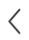

<div class="page-group">
  <div class="page" id="commentDetails">
    <header class="bar bar-nav" style="background:#fff">
      <a class="button button-link button-nav pull-left getBackToPage" href="javascript:history.go(-1);" id="goBack">
        <span style="padding-left: 10px">
          
        </span>
      </a>
      <h1 class="title" style="line-height:2.5rem;color:#333;">277条评论</h1>
    </header>
    <div class="content pull-to-refresh-content infinite-scroll infinite-scroll-bottom" data-ptr-distance="55" data-distance="100"
      id="commentContent">
      <!-- 默认的下拉刷新层 -->
      <div class="pull-to-refresh-layer">
        <div class="preloader"></div>
        <div class="pull-to-refresh-arrow"></div>
      </div>
      <div class="uiContentList" id="uiContentList">
        <!-- <div class="commentList">
          <div class="infoImage">
            
          </div>
          <div class="infoContent">
            <div class="infoName">
              <span class="userName">晓歌</span>
              <span class="praise">
                
                <span class="praiseNum">1</span>
              </span>
            </div>
            <div class="infoContentText">
              人生如减法,生活要简单.人生如减法,生活要简单. 人生如减法,生活要简单.人生如减法,生活要简单. 人生如减法,生活要简单.
            </div>
            <div class="infoContentReply">
               <div class="replyList">
                 
                 <span class="replyText"><span class="infoNameReply">冰心:</span>主要是赶巧.安写幽默小段子多了,在这写点评换换口味.主要是赶巧.安写幽默小段子多了,在这写点评换换口味主要是赶巧.安写幽默小段子多了,在这写点评换换口味主要是赶巧.安写幽默小段子多了,在这写点评换换口味主要是赶巧.安写幽默小段子多了,在这写点评换换口味主要是赶巧.安写幽默小段子多了,在这写点评换换口味</span>
               </div>
               <div class="replyCount">共10条回复></div>
            </div>
            <div class="infoTime">
              7分钟前
            </div>
          </div>
        </div> -->
      </div>
      <!-- 加载提示符 -->
      <div class="infinite-scroll-preloader">
        <div class="preloader"></div>
      </div>
      <div id="noMore">
        已没有更多
      </div>
    </div>
    <nav class="bar bar-tab">
      <input type="text" placeholder="写下你的感受..." id="commentText">
      <a href="#" class="sendConmment">发送</a>
    </nav>
     <!-- 回到顶部按钮 -->
     <a class="topBackComent" id="topBackComent">
      
    </a>
  </div>
</div>